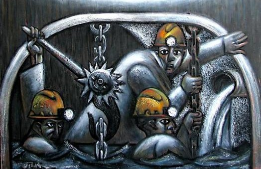
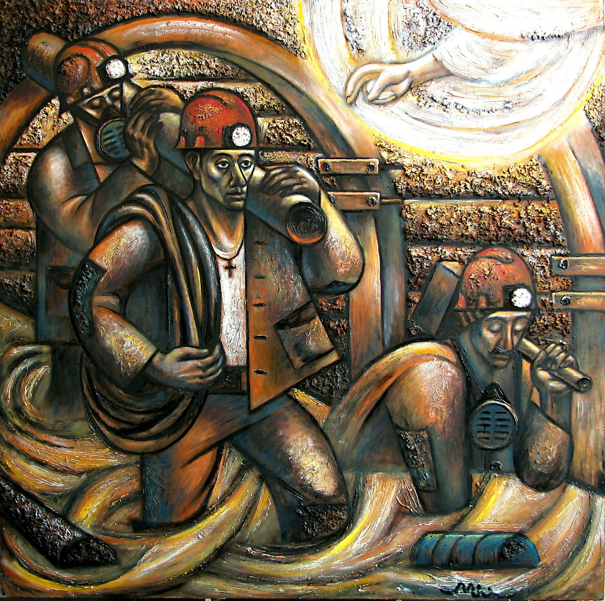
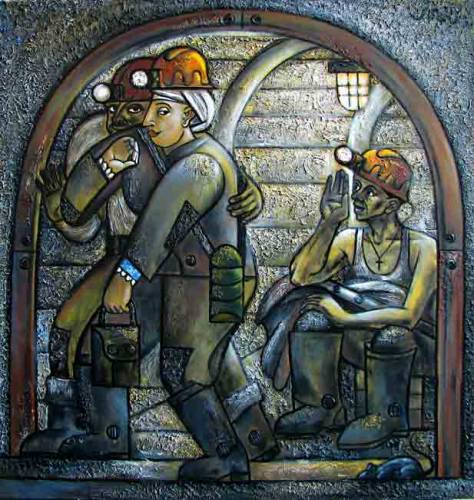
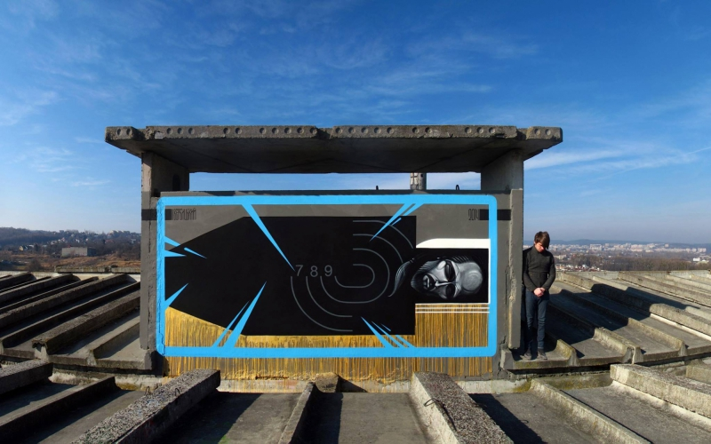
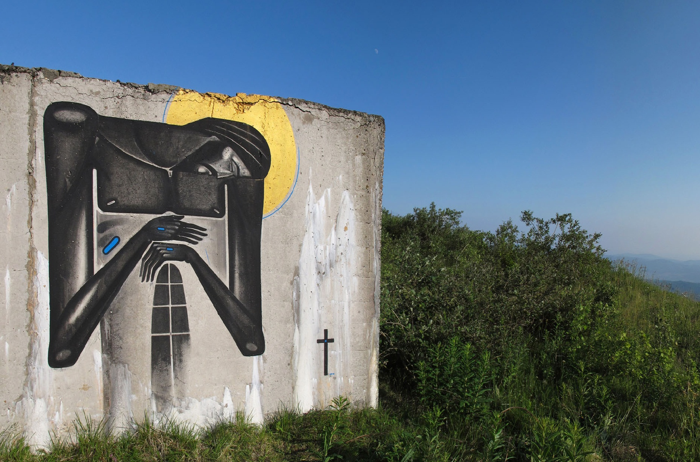
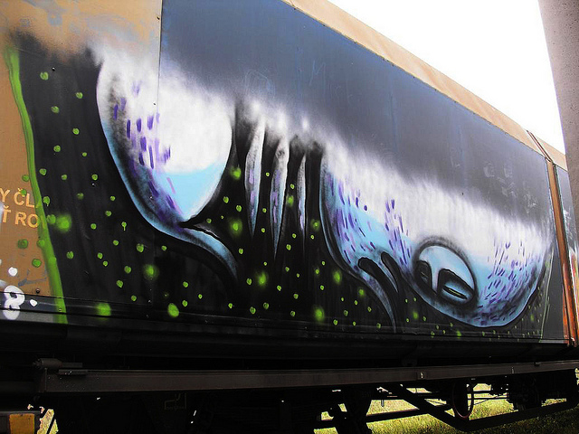
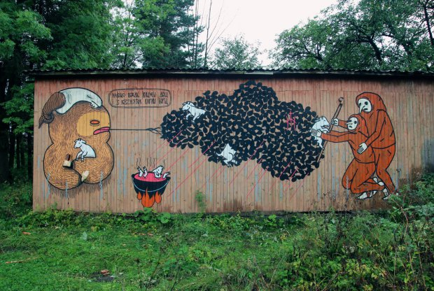
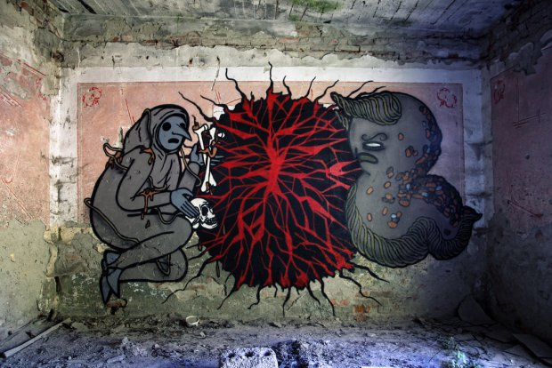

Стріт-арт
Майстри стріт-арту в Україні
Роман Мінін
Харків'янин Роман Мінін займається вуличним мистецтвом поряд з галерейними роботами і створенням вітражів. Він народився в місті Димитрові Донецької області, головна для нього тема - шахтарська.
Мінін відштовхується від загальноприйнятого уявлення про важке життя в шахтарському місті і розповідає у своїх роботах про те, як індустрія стає способом життя. Роман Мінін був одним з 20 номінантів премії PinchukArtCentre - 2013p, проте його вуличні роботи іноді радикально відрізняються від того, що він робить для галерейних виставок. У 2008 році Роман Мінін організував фестиваль стріт-арту в Харкові, і в рамках фестивалю виконав роботу «Дуель століття».
"Змінюється спосіб життя, діти ростуть в іншому середовищі, бачать, що на стінах можна малювати, що щось робиться не заради грошей", – вважає художник Роман Мінін.
На його тверде переконання, вуличні картинки впливають на суспільні підвалини, навіть якщо безпосередньо і не кричать про соціальні проблеми.
|  |  |  |
Одного разу Мінін, після кількох років нудного настінного розпису під замовлення примхливих клієнтів наважився зробити своїм головним полотном вільні міські стіни. З того часу його пристрасть до монументально-декоративного мистецтва знайшла друге дихання в десятках робіт – від варіацій на тему масових ідолів, як в роботі Мадонна-Марадона, і до стилізованих під соцарт замальовок шахтарського побуту, а також спроб тематично оживити міський простір. Приміром, він забезпечив вулиці Пушкінську і Гоголівську відповідними персонажами з творів письменників.
Сергій Радкевич
Народився в 1987 р., Луцьк, Україна.
Закінчив Львівську національну академію мистецтв, відділення монументального живопису (клас-майстерня Л. Медвідь).
Пріорітети- монументальний розпис, стріт-арт, живопис, графіка.
Один з організаторів стріт-арт фестивалю BLACK CIRCLE FESTIVAL (2010, 2011).
Засновник першої на Волині резиденції «GRANNY HALL» (c. Самійличі, 2012).
Живе і працює у Львові, Україна.
 |
 |  |
Львівський художник Сергій Радкевич - один з найцікавіших українських майстрів стріт-арту. Він закінчив Академію мистецтв і тепер розписує будівлі та галерейні простори сучасним іконописом. Сам художник називає свої роботи паблік-артом, і вважає, що його обов'язок - допомогти людям задуматися над духовними питаннями.
Він зображував лик Христа на покинутому заводі і на скелях, розписував занедбані сільські будинки образами євангелістів, малював Євхаристію і інші християнські сюжети. У 2011 році він отримав спеціальну премію PinchukArtCentre і залишається одним з найвпливовіших українських художників. Минулого тижня Сергій Радкевич виконав розпис « Упокой » на згадку про тих, хто загинув і постраждав у протистоянні на Майдані.
Сергій Радкевич: "Це робота, в якій я підтримую протест проти спрямованої навмисної агресії відносно людського тіла, абсурдності використання «людини - мети» у військових навчаннях. Будучи неживою, ця агресія несе в собі знак живого суб'єкта і перетворюється на реальні жертви. Робота в пам'ять про тих, хто постраждав від свідомого насильства"
Андрій Хір
Андрій Хір народився 1988 року в Ужгороді, живе і працює у Львові.
2010 року закінчив Архітектурний факультет Львівського політехнічного університету.
Займається мистецтвом, архітектурою та дизайном.
Основні виставки:
Neofolk project, програма візуального мистецтва арт-центру Я, Галерея на ГОГОЛЬFEST 2012. Сучасне мистецтво Західної України, спецпроект арт-центру Я Галерея, в рамках ART MOSCOW 2012, Центральний дім художника, Москва, Росія, Black Circle festival, смт. Понінка
Скандальний цех, проект «In crust we trust», Львів, "Сome post", Музей ідей, Львів
Фестиваль "Екле", Падіюнм, Ужгород
Львівський осінній салон, Палац Мистецтв та ін.
За освітою він архітектор. У його розписах зустрічаються поетичні та музичні образи , в тому числі фольклорні. Його герої - жаби, мухи, кози і інші тварини. У 2013 році для виставкового проекту «Приповідки» він проілюстрував закарпатські прислів'я та приказки. Андрія Хіра також цікавлять зловісні і таємничі теми - демонологія або, наприклад, стародавні міфи.
|  |  |  |
Андрій Хір полюбляє вузькі вертикальні композиції, вимальовує овальні обрамлення – аби «полонити» усяку нечисть у тісних «ямах». І тим самим заспокоїти глядача – ці істоти безпечні. Автор обирає кольори ночі як символ потойбіччя, може жахати нас страхітливими бісівськими персонажами і сугестією містичного. Проте, як і належить у народній традиції, переводить страшне у казкове, поборює страхи силою народного духу і яскравим гумором, іронізує та глузує, підкреслюючи в людині тваринне, а в тварині – людське.
Поки що у львівського художника було не так вже й багато виставок; перший його персональний проект «Хір - звір з гір» був виставлений в Києві в 2011 році. Його вуличні проекти, скоріше картини, створені під відкритим небом.
Назад Вгору